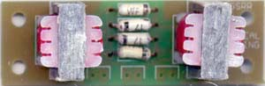

|
Real Ring Modem for music synthesizers.
 Please note: This is not a guitar effect where you can "plug in your guitar and get a sound out". Extra circuity is absolutely essential, either directly wired, or as parts of other equipment. If you need to ask how to use it, then it's not for you. This is something you can try if you have two Real Ring Modulators, or with a little variation, any two four quadrant multipliers. In radio work, modulation is only the first step. Before the signal can be heard at the receiving end, it must first be demodulated. The wiring diagram below shows a simple system that more-or-less replicates this, but without all the extra gear associated with radio transmission and reception. Basically we need to feed the same carrier into two Real Ring Modulators, the second modulator being used in reverse to demodulate the signal that was modulated in the first. In a perfect world this would result in an identical signal to what was being fed in, which of course would make the exercise pointless in a synthesizer. Fortunately, Real Rings Modulators introduce distortion, so some interesting sounds can be achieved. When the two Real Ring Modulators are interconnected, it is possible to not use any buffer in between them, though in this case, (allowing for some variation in wiring,) you would need to connect the outputs together and take your new output from the input of the second. This effectively reverses the phase of the second carrier. Alternatively you can install a switch as shown. As soon as a buffer or modifier (for example a filter) is added between the two modulators, the correct phase will need to be determined by experiment, as some modules will invert the signal.
Construction
Wiring the modem. The only "assembly" needed is to connect the board to input and output jacks, and perhaps wire in a phase reversal DPDT switch.
Notes:
If anyone is interested in buying these units, please. Check the PCBs for Sale page to see if I have any in stock.
Can't find the parts? See the parts FAQ to see if I've already answered the question. Also see the CGS Synth discussion group.
Article, art & design copyright 2004 by Ken Stone
|